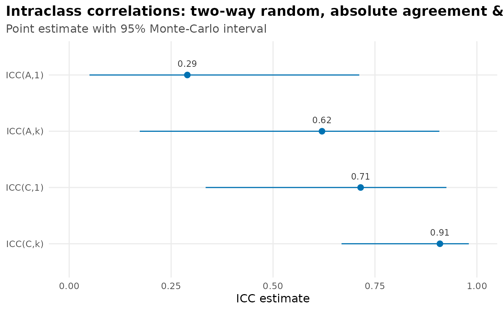
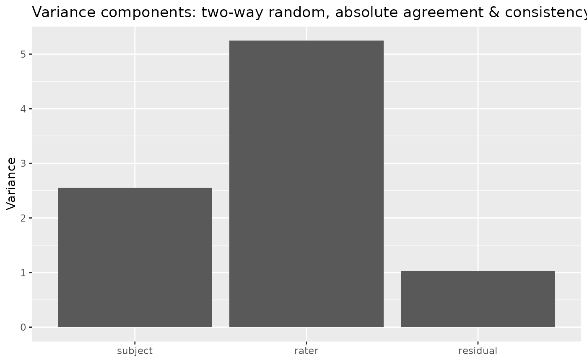

Intraclass correlation coefficient for a two-way design
Source:R/autoplot.R, R/icc-methods.R, R/icc.R
icc.RdEstimates interrater-reliability intraclass correlation coefficients (ICCs)
from a fitted linear mixed model, rather than from classical ANOVA mean
squares. icc() computes the two-way absolute-agreement (ICC(A,*)) or
consistency (ICC(C,*)) coefficients of McGraw & Wong (1996), for a
single rater (ICC(*,1)) or the mean of k raters (ICC(*,k)), treating the
raters as a random sample (Case 2) or as fixed (Case 3).
Usage
autoplot.icc(object, what = c("coefficients", "components"), ...)
# S3 method for class 'icc'
plot(x, ...)
# S3 method for class 'icc'
format(x, ...)
# S3 method for class 'icc'
print(x, ...)
# S3 method for class 'icc'
summary(object, ...)
# S3 method for class 'icc'
tidy(x, ...)
# S3 method for class 'icc'
glance(x, ...)
icc(
data,
score,
subject,
rater,
cluster = NULL,
model = "twoway",
type = c("agreement", "consistency"),
raters = c("random", "fixed"),
unit = c("single", "average"),
occasions = "single",
level = c("subject", "cluster"),
design = NULL,
engine = "glmmTMB",
conf_level = 0.95,
ci_method = "montecarlo",
mc_samples = 10000L,
boot_samples = 999L,
seed = NULL,
brm_args = list(),
prior = NULL,
posterior_summary = c("percentile", "hpdi")
)Arguments
- what
Which plot to draw:
"coefficients"(the default) for a forest plot of each ICC index with its Monte-Carlo confidence interval, or"components"for the variance-component decomposition.- ...
Unused, for method consistency.
- x, object
An
iccobject.- data
A data frame with one rating per row.
- score, subject, rater
Columns of
data(unquoted): the numeric rating, the subject (object of measurement), and the rater (judge).- cluster
Optional column of
data(unquoted) giving the higher-level unit each subject is nested in (e.g. classroom, clinic). Supplying it switches on the multilevel ICC (ten Hove et al. 2022): reliability is reported at the subject and/or cluster level (seeleveland the Multilevel designs section). LeftNULL(the default) for an ordinary single-level two-way ICC.- model
Design:
"twoway"(the default; subjects crossed with a common set of raters) or"oneway"(each subject rated by a possibly different set of raters). Under"oneway"(Shrout & Fleiss Case 1) the raters are treated as interchangeable – theratercolumn is used only to count the ratings per subject, its labels are ignored, and there is no rater main effect to model, sotypedoes not apply and the coefficients areICC(1)/ICC(k). Fixed raters and acluster(multilevel) structure are not defined for a one-way design.- type
Error definition (two-way only):
"agreement"(absolute agreement, the default) counts systematic rater differences as error;"consistency"ignores them. Not applicable whenmodel = "oneway".- raters
Rater sampling:
"random"(the default; two-way random, Case 2) generalizes to a rater universe;"fixed"(two-way mixed, Case 3) treats the observed raters as the entire population and is fit with raters as fixed effects (score ~ 1 + rater + (1 | subject)). On balanced data the point estimate matches"random"; on incomplete data the two genuinely differ. Even when balanced, the interval differs for absolute agreement, because inference about fixed vs. random rater effects is not the same. Choosing"fixed"emits a warning, because random is the recommended default for interrater reliability.- unit
The averaging unit(s):
"single"(->ICC(*,1)),"average"(->ICC(*,k)), or a numberm>= 1 for a D-study projection to the mean ofmraters (->ICC(*,m)), or any combination. Seed_study()for projecting across a range ofm. Projecting absolute agreement is not defined for fixed raters (seed_study()).- occasions
For data with within-cell replicates (more than one rating per subject-by-rater cell), whether to average over them:
"single"(the default – the reliability of one rating) and/or"average"(the mean of then_oreplicates, which reduces pure error)."average"requires replicated data. See the Within-cell replicates section. Ignored with one rating per cell.- level
For multilevel designs (a
clustercolumn), which reliability to report:"subject"(within-cluster, distinguishing subjects) and/or"cluster"(between-cluster, distinguishing cluster means). Defaults to both."conflated"may be added for the biased ignore-the-clustering ICC as a diagnostic contrast (agreement-only, complete crossed designs; see the Multilevel designs section). Ignored (and must be left at its default) whenclusteris not supplied. Only"subject"is available when raters are nested in clusters.- design
Multilevel design (with a
clustercolumn):NULL(the default) infers it from the crossing pattern. On incomplete data missing cells can make the pattern ambiguous between a crossed and a nested design; declare it explicitly with"crossed","nested_in_clusters", or"nested_in_subjects"to resolve the ambiguity. A declaration is validated against the data – it cannot force a design the data cannot support (e.g."crossed"still requires raters that bridge clusters to estimate absolute agreement).- engine
Estimation engine:
"glmmTMB"(default),"lme4","lavaan", or"brms"."glmmTMB"and"lme4"fit the variance components by REML and agree to within numerical tolerance on balanced data."lavaan"fits the equivalent structural-equation (common-factor) generalizability model and recovers the rater main effect from the mean structure (Jorgensen 2021). Consistency ICCs from"lavaan"equal the mixed-model estimates exactly on balanced data; absolute-agreement ICCs use the SEM indicator-mean estimator of the rater variance, which is asymptotically equivalent to the mixed-model one and matches conventional generalizability-theory software on real data (Vispoel et al. 2022) but differs by a small-sample term on tiny designs (e.g. 0.284 vs 0.290 on the 6-subject example below)."lme4"covers every design"glmmTMB"does – two-way (random or fixed raters), one-way, and the multilevel designs (crossed and nested) at both levels – on both balanced and incomplete/ragged data. A ragged fit that lands exactly on a variance-component boundary falls back to"glmmTMB"(which stays finite via its log-SD parameterization) with a clear message."lavaan"covers the two-way design with random or fixed raters (for fixed raters the agreement rater term is the McGraw & Wong Case-3A bias-corrected finite-population variance, which equals the mixed-model estimate on balanced data), on both complete and incomplete data (missing cells are estimated by full-information maximum likelihood; the parametric bootstrap is unavailable for incomplete SEM)."brms"fits the random-rater model in a Bayesian framework (Stan, via brms) under a sourced half-t(4, 0, 1) prior on the random-effect SDs (ten Hove et al. 2020); the point estimate is the posterior mode (MAP) and the interval is a percentile credible interval (ci_method = "posterior", forced). It covers, on both balanced/complete and incomplete/ragged data, the two-way random single-level design, the crossed (Design 1) multilevel random design (subject and cluster levels), the two-way fixed-rater single-level design (Case-3A finite-population \(\theta^2_r\)), the crossed (Design 1) multilevel fixed-rater design (subject level), and the nested Design 2 (raters nested in clusters) and Design 3 (raters nested in subjects, the multilevel one-way, agreement-only) random multilevel designs (subject level), and the single-level one-way random design; and, on balanced/complete data only, the nested Design 2 fixed-rater multilevel design at the subject level, the conflated diagnostic, and within-cell replicates. Incomplete/ragged fixed-nested and within-cell-replicate Bayesian fits, and numeric-unit(D-study) projection, are planned for later milestones."lme4"requires the lme4 and merDeriv packages;"lavaan"requires the lavaan package;"brms"requires the brms package (and a working Stan toolchain).- conf_level
Confidence level for the interval (default
0.95).- ci_method
Interval method.
"montecarlo"(default) simulates from the fitted parameter covariance on the engine's log scale (fast, boundary-aware)."bootstrap"is a parametric bootstrap: it simulates response vectors from the fitted model, refits, and takes percentile quantiles of the resampled coefficients. The bootstrap does not rely on the asymptotic-normal covariance approximation but is far slower (a refit per resample). It is available for every design the"glmmTMB"and"lme4"engines fit (viaglmmTMB'ssimulate()+ refit andlme4::bootMerrespectively) and, for the random two-way design, the"lavaan"engine (which simulates from the fitted SEM's implied moments and refits). As with the Monte-Carlo interval, the"lme4"engine defers a singular (boundary) fit to"glmmTMB"for either method."posterior"is the percentile credible interval from the Bayesian engine's posterior draws; it is the forced default for, and available only with,engine = "brms"(and"brms"requires it) – the other methods do not apply to a Bayesian fit, and"posterior"needs posterior draws no other engine produces.- mc_samples
Number of Monte-Carlo draws for
ci_method = "montecarlo"(default10000).- boot_samples
Number of resamples for
ci_method = "bootstrap"(default999). Ignored whenci_method = "montecarlo".- seed
Optional integer seed for a reproducible interval (and, for
engine = "brms", the Stan sampler seed). The global RNG state is restored afterward.- brm_args
A named list of extra arguments forwarded to
brms::brm()whenengine = "brms"(e.g.backend,chains,iter,cores,control). The default (rstan backend, brms defaults) needs none. By default brms samples the chains sequentially on one core (cores = getOption("mc.cores", 1L)); passbrm_args = list(cores = 4)(or setoptions(mc.cores)) to sample in parallel — the engine emits a periodic reminder to that effect while running sequentially. The model formula, data, the sourced half-t prior, andseedare owned byintraclassand may not be set here (the prior has its ownpriorargument); supplying them, or a non-emptybrm_argswith any other engine, is an error.- prior
Optional custom prior for
engine = "brms", as a brms prior object (frombrms::set_prior()/brms::prior(); combine several withc()). The defaultNULLuses the sourced half-t(4, 0, 1) prior on every random-effect SD (ten Hove, Jorgensen & van der Ark 2020), the prior every coverage result in this package depends on. Supplying a custom prior is a deliberate deviation — intended for prior-sensitivity, method-comparison, or simulation work — and voids those coverage guarantees;icc()warns loudly (a classedintraclass_custom_priorcondition) because a vague or flat SD prior can worsen small-k boundary bias (the half-t is weakly informative on purpose). Ignored (must beNULL) for non-Bayesian engines.- posterior_summary
How to summarize the posterior draws into a credible interval when
ci_method = "posterior"(the Bayesian engine):"percentile"(the default — a two-sided percentile interval) or"hpdi"(the highest-posterior-density interval, the narrowest interval covering the credible mass). Percentile is the default because it is monotone-transformation invariant and degrades gracefully as the ICC approaches the variance boundary, and ten Hove, Jorgensen & van der Ark (2020) found percentile (not HPD) intervals give nominal coverage at small rater counts; the HPDI is offered for comparison, not as a strict upgrade (no coverage is claimed for it). Only the HPDI needs the posterior draws, soposterior_summary = "hpdi"requiresci_method = "posterior"; the other interval methods already report a percentile interval.
Value
An icc object: a list with the estimate table, variance components,
design, engine, interval settings, sample sizes, the fitted model, and the
call. Use tidy(), glance(), and the
print/summary methods.
Which ICC is this, and when should you use it?
Three choices pin down the coefficient:
Agreement vs. consistency (
type). Absolute agreement treats systematic differences between raters (the rater main effect, \(\sigma^2_r\)) as error: use it when the actual value matters and raters must agree on the number (clinical scores, measurements). Consistency ignores a constant per-rater offset: use it when only relative standing matters. A large gap between the two signals big systematic differences in rater level – a rating-procedure problem worth fixing.Single vs. average (
unit).ICC(*,1)is the reliability of a single rater;ICC(*,k)is the reliability of the mean of yourkraters. ReportICC(*,k)when the averaged score is what you will use.Random vs. fixed raters (
raters). Random treats your raters as a sample you wish to generalize beyond – the recommended default for interrater reliability. Fixed treats them as the only raters of interest and forgoes generalization; it is fit separately (raters as fixed effects), so on balanced data it matches the random point estimate but on incomplete data it genuinely differs.icc()warns when you choose it. Fixed-rater consistency is the classic Shrout & FleissICC(3,1).
Estimand
With a single rating per subject-by-rater cell, the subject-by-rater
interaction and pure error are not separately identified; only their sum, the
residual variance \(\sigma^2_{res}\), is estimable. Absolute agreement counts
the rater main effect \(\sigma^2_r\) as error; consistency drops it:
$$ICC(A,1) = \sigma^2_s / (\sigma^2_s + \sigma^2_r + \sigma^2_{res})$$
$$ICC(A,k) = \sigma^2_s / (\sigma^2_s + (\sigma^2_r + \sigma^2_{res}) / k)$$
$$ICC(C,1) = \sigma^2_s / (\sigma^2_s + \sigma^2_{res})$$
$$ICC(C,k) = \sigma^2_s / (\sigma^2_s + \sigma^2_{res} / k)$$
where \(\sigma^2_s\) is the subject (signal) variance and k is the number
of raters.
Multilevel designs (subject vs. cluster level)
When subjects are nested in higher-level clusters (pupils in classrooms,
patients in clinics), single-level ICCs conflate the levels and are biased
(ten Hove et al. 2022). Supplying cluster fits the five-component Design-1
model
$$score \sim 1 + (1|cluster) + (1|cluster{:}subject) + (1|rater) + (1|cluster{:}rater)$$
and reports two distinct reliabilities. The subject level (within-cluster)
asks how reliably raters distinguish subjects within a cluster: its signal is
the between-subject-within-cluster variance and cluster variance drops out. The
cluster level (between-cluster) asks how reliably raters distinguish cluster
means: its signal is the between-cluster variance and the rater-disagreement
error is the cluster-by-rater term. Choose the level that matches the decision
you will make (about a subject, or about a cluster). The agreement/consistency
and single/average choices above apply at each level.
level = "conflated" reports the biased single-level ICC you would get by
ignoring the clustering (ten Hove et al. 2022, Eq. 14): between- and
within-cluster subject variance are both counted as signal, and all three
rater-related terms as error. It is offered only as a diagnostic contrast –
to quantify how much the nesting distorts reliability – and is never a
recommended coefficient; print() flags it as such. It is absolute-agreement
only (Eq. 14 has no consistency form) and needs a crossed (Design 1) random-rater
design; it works on both balanced and incomplete data (on ragged data it is the
flat two-way ICC read off the multilevel fit, with the same k_eff divisor).
Request it alongside the correct levels, e.g.
level = c("subject", "cluster", "conflated").
The design is inferred from the data (ten Hove et al. 2022, Table 2). If
raters are crossed with clusters (each rater rates in every cluster) the
five-component model above is used (Design 1). Because the design is read from
the rater labels, a rater label that appears in more than one cluster is
taken to be the same rater (crossed). If your raters are cluster-specific but
share labels (e.g. "rater 1"/"rater 2" reused in every cluster – a nested
design), give them cluster-unique labels or declare design = "nested_in_clusters";
otherwise the design is treated as crossed and icc() prints a one-time note of
that assumption. If raters are nested in
clusters (each cluster has its own raters; Design 2) a four-component model is
fit, with the rater variance carried by the nested rater-within-cluster term. If
raters are nested in subjects (each subject has its own raters; Design 3) the
rater variance is confounded into the residual, giving a three-component
multilevel one-way model that reports agreement-only ICC(1)/ICC(k). Both
nested designs define only the subject level – a cluster-level ICC needs
raters crossed with clusters – so level is restricted to "subject" for them.
Mixed patterns (some raters crossed, some nested) are not a supported design and
raise an error. The crossed design (Design 1) additionally supports
incomplete data – subjects rated by different, overlapping rater subsets
(missing cells) – computing the subject-level ICCs by REML with the averaging
divisor set to the effective number of ratings per subject (k_eff, the harmonic
mean), exactly as the single-level incomplete two-way ICC does. Identifiability is
checked first: each cluster's subject-by-rater layout must be connected, and for
absolute agreement raters must bridge clusters (otherwise the design is really
rater-nested). When missing cells make the crossed-vs-nested pattern ambiguous,
declare it with design (above). On incomplete data the cluster level is
reported as the single-rater ICC(c,1) (when raters bridge clusters); the averaged
cluster-level ICC(c,k) on incomplete data is not yet supported (its effective
number of raters per cluster is still being validated). If an averaged unit is
requested for the cluster level on incomplete data, that row is dropped (with a
message) rather than failing the whole call, so the subject-level averages and the
single-rater cluster ICC are still returned. Fixed raters
(raters = "fixed") are supported for the crossed design at the subject level
on both balanced and incomplete data: the rater main effect becomes the
finite-population variance of the observed raters (McGraw & Wong Case 3A), so on
balanced data consistency is identical to the random-rater case and absolute
agreement differs only by that term; on incomplete data both types differ from
random (the finite-population variance is read from the ragged rater-contrast fit).
Nested (Design 2) fixed raters are likewise supported at the subject level on
both balanced and incomplete data (the finite-population rater variance is formed
per cluster – each cluster's own raters – and averaged over clusters; on ragged
data each cluster uses its own effective rater count). The fixed-rater cluster
level, Design-3 fixed raters (nested in subjects – no separable rater effect), and the
Bayesian (engine = "brms") incomplete fixed-nested path remain for later milestones.
Within-cell replicates
When a subject-by-rater cell is rated more than once (within-cell
replicates), icc() fits the two-way random model with a subject-by-rater
interaction, score ~ 1 + (1|subject) + (1|rater) + (1|subject:rater), which
splits the single-rating residual into the interaction \(\sigma^2_{sr}\)
(does a rater systematically rate a subject high or low – stable disagreement?)
and pure error \(\sigma^2_e\) (rating noise). Both are reported. The
single-occasion ICCs are unchanged in value from a one-rating-per-cell analysis
(a single rating's error still includes the interaction), but the components are
no longer confounded, and occasions = "average" reports the reliability of the
mean of the replicates (which reduces \(\sigma^2_e\) but not
\(\sigma^2_{sr}\)). With raters = "fixed" the rater main effect becomes the
finite-population \(\theta^2_r\) (McGraw & Wong Case 3A, fit as
score ~ 1 + rater + (1|subject) + (1|subject:rater)); on balanced, complete data
\(\theta^2_r = \sigma^2_r\), so fixed reproduces the random-rater coefficients.
Multilevel replicated designs add a (1|cluster:subject:rater) term (crossed
Design 1 and nested Design 2), splitting the highest-order residual at the subject
level. Ragged (unequal per-cell counts or missing cells) two-way random data
fits the single-occasion family directly (the replicate analogue of an
incomplete design); the occasion-averaged coefficient on ragged data is not yet
supported (there is no single effective occasion count to average over). One-way
replicates, fixed or multilevel ragged replicates, and d_study() projection off a
replicate fit are planned for later milestones.
Confidence intervals
Intervals are Monte-Carlo: parameters are drawn from the fitted covariance on
the model's internal (log) scale and back-transformed, so the interval is
boundary-aware near the common zero-rater-variance case where the delta method
fails. Pass seed for a reproducible interval.
References
McGraw, K. O., & Wong, S. P. (1996). Forming inferences about some intraclass correlation coefficients. Psychological Methods, 1(1), 30-46.
Shrout, P. E., & Fleiss, J. L. (1979). Intraclass correlations: uses in assessing rater reliability. Psychological Bulletin, 86(2), 420-428.
ten Hove, D., Jorgensen, T. D., & van der Ark, L. A. (2022). Interrater reliability for multilevel data: A generalizability theory approach. Psychological Methods, 27(4), 650-666.
Examples
fit <- icc(ratings, score, subject, rater, unit = c("single", "average"), seed = 1)
ggplot2::autoplot(fit) # coefficient forest plot (the default)

ggplot2::autoplot(fit, what = "components") # variance-component decomposition

ratings <- data.frame(
subject = factor(rep(1:6, 4)),
rater = factor(rep(1:4, each = 6)),
score = c(9, 6, 8, 7, 10, 6, 2, 1, 4, 1, 5, 2,
5, 3, 6, 2, 6, 4, 8, 2, 8, 6, 9, 7)
)
icc(ratings, score, subject, rater, seed = 1)
#> # Intraclass correlation: two-way random, absolute agreement
#> Subjects: 6 | Raters: 4 (random) | Observations: 24 of 24 cells (complete)
#> Engine: glmmTMB (REML) | CI: 95% montecarlo (10000 draws)
#> index estimate 95% CI
#> ICC(A,1) 0.290 [0.050, 0.706]
#> ICC(A,k) 0.620 [0.175, 0.906]
#> Variance components: subject 2.556, rater 5.244, residual 1.019
#> Shrout & Fleiss equivalent: ICC(A,1) = ICC(2,1), ICC(A,k) = ICC(2,k)